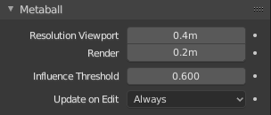

属性¶
参考
- 模式
物体或编辑模式
- 面板
所有场景中的元物体都与彼此相互作用. 在 融球 部分的选项适用于所有元物体. 在 编辑模式 中, 活动元素 面板在编辑个别融球(元)元素时出现.

全局元物体属性¶ |

个别元物体属性¶ |
分辨率¶
分辨率 控制由元物体生成的网格的分辨率.
- 视图
所生成网格的3D视图的解析度范围从(0.05至1.0)(最平滑的到最粗糙的)。
- 渲染
所生成网格的渲染后解析度范围从(0.05至1.0)(最平滑的到最粗糙的)。
一种看到的底层数学结构的方法是，降低 分辨率，增加 阈值 和设置 刚度 (见下文)为*阈值*之上的一小点。图. 基础结构 是一个 元立方体 在上述值设为: 分辨率 为 0.410, 阈值 为 5.0 以及 刚度 为 5.01(阈值之上一小点)时的情况.

基础结构¶ |

元立方体形状.¶ |
你可以清楚地看到的基本立方结构，这设置了元立方体为它这种形状。
阈值(影响)¶
阈值 定义了元物体的表面如何影响其他的元物体. 它控制计算其表面时的 场级别.。这个设置是对于一组元物体全局有效的. 随着阈值增加,每一个元物体对其他元物体的影响也随之增加.
有两种影响的类型:正向*和*负向. 类型可以在*编辑模式*的*活动元素*面板中使用*负向*按钮切换开启或关闭你可以认为对于网格之间,*正向*是吸引,*负向*是排斥. 一个负元物体会推开或排斥正元物体的网格.

三个元求之间的正向影响.¶
正 影响被定义为吸引,这意味着网格会朝着彼此的*影响环*相交方向延伸. 图. 三个元求之间的正向影响. 展示了三个元球的 影响环 由正向影响相交.
注意网格是如何朝着对方推过去的. 白色区域环展示了绿色的影响环相交情况.
更新¶
当变换元物体(抓取/移动,缩放,等)时,你有四个可视化模式,他们唯一*融球*面板的*更新*按钮组里.
- 总是
在变换时完全绘制元物体.
- 一半
在变换时,绘制元物体的线型分辨率.
- 快速
在变换时,不显示元物体网格.
- 从不
永不现实元物体网格(不推荐,由于元物体会只在渲染时可见).
这应该会有帮助,如果你遇到的困难(元物体是相当密集的计算...)，但对于现代计算机，这不应该发生，除非你使用很多元物体，或非常高的分辨率...